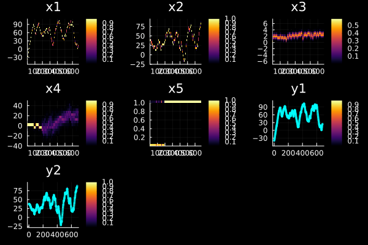
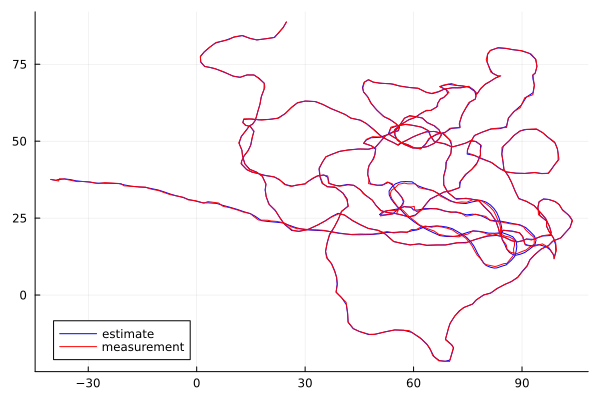
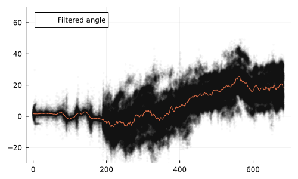
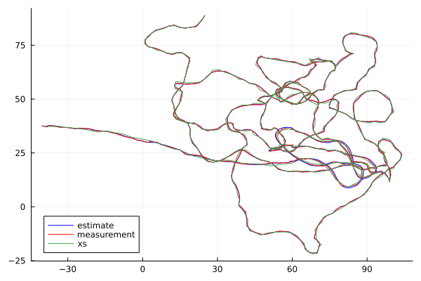
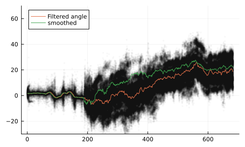
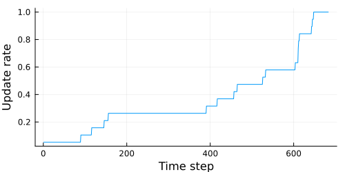
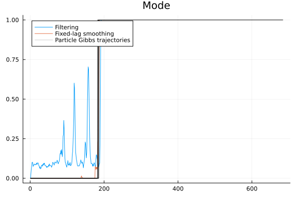

Smoothing the track of a moving beetle
This is an example of smoothing the 2-dimensional trajectory of a moving dung beetle. The example spurred off of this Discourse topic. For more information about the research behind this example, see Artificial light disrupts dung beetles’ sense of direction and A dung beetle that path integrates without the use of landmarks. Special thanks to Yakir Gagnon for providing this example.
In this example we will describe the position coordinates, $x$ and $y$, of the beetle as functions of its velocity, $v_t$, and direction, $θ_t$:
\[\begin{aligned} x_{t+1} &= x_t + \cos(θ_t)v_t \\ y_{t+1} &= y_t + \sin(θ_t)v_t \\ v_{t+1} &= v_t + e_t \\ θ_{t+1} &= θ_t + w_t \end{aligned}\]
where $e_t ∼ N(0,σ_e), w_t ∼ N(0,σ_w)$ The beetle further has two "modes", one where it's moving towards a goal, and one where it's searching in a more erratic manner. Figuring out when this mode switch occurs is the goal of the filtering. The mode will be encoded as a state variable, and used to determine the amount of dynamic noise affecting the angle of the beetle, i.e., in the searching mode, the beetle has more angle noise. The mode switching is modeled as a stochastic process with a binomial distribution (coin flip) describing the likelihood of a switch from mode 0 (moving to goal) and mode 1 (searching). Once the beetle has started searching, it stays in that mode, i.e., the searching mode is "sticky" or "terminal".
The image below shows an example video from which the data is obtained 
We load a single experiment from file for the purpose of this example (in practice, there may be hundreds of experiments)
using LowLevelParticleFilters, LinearAlgebra, StaticArrays, Distributions, Plots, Random
using DelimitedFiles
path = "../track.csv"
xyt = readdlm(path)
tosvec(y) = reinterpret(SVector{length(y[1]),Float64}, reduce(hcat,y))[:] |> copy # helper function
y = tosvec(collect(eachrow(xyt[:,1:2])))We then define some properties of the dynamics and the filter. We will use an AdvancedParticleFilter since we want to have fine-grained control over the noise sampling for the mode switch.
N = 2000 # Number of particles in the particle filter
n = 4 # Dimension of state: we have position (2D), speed and angle
p = 2 # Dimension of measurements, we can measure the x and the y
@inline pos(s) = s[SVector(1,2)]
@inline vel(s) = s[3]
@inline ϕ(s) = s[4]
@inline mode(s) = s[5]We then define the probability distributions we need.
dgσ = 1 # the deviation of the measurement noise distribution
dvσ = 0.3 # the deviation of the dynamics noise distribution
ϕσ = 0.5
const switch_prob = 0.03 # Probability of mode switch
const dg = MvNormal(@SVector(zeros(p)), dgσ^2) # Measurement noise Distribution
const df = LowLevelParticleFilters.TupleProduct((Normal.(0,[1e-1, 1e-1, dvσ, ϕσ])...,Binomial(1,switch_prob)))
d0 = MvNormal(SVector(y[1]..., 0.5, atan((y[2]-y[1])...), 0), [3.,3,2,2,0])
const noisevec = zeros(5) # cache vectorWe now define the dynamics, since we use the advanced filter, we include the noise=false argument. The dynamics is directly defined in discrete time.
@inline function dynamics(s,u,p,t,noise=false)
# current state
m = mode(s)
v = vel(s)
a = ϕ(s)
p = pos(s)
# get noise
if noise
y_noise, x_noise, v_noise, ϕ_noise,_ = rand!(df, noisevec)
else
y_noise, x_noise, v_noise, ϕ_noise = 0.,0.,0.,0.
end
# next state
v⁺ = max(0.999v + v_noise, 0.0)
m⁺ = Float64(m == 0 ? rand() < switch_prob : true)
a⁺ = a + (ϕ_noise*(1 + m*10))/(1 + v⁺) # next state velocity is used here
p⁺ = p + SVector(y_noise, x_noise) + SVector(sincos(a))*v⁺ # current angle but next velocity
SVector{5,Float64}(p⁺[1], p⁺[2], v⁺, a⁺, m⁺) # all next state
end
function measurement_likelihood(s,u,y,p,t)
logpdf(dg, pos(s)-y) # A simple linear measurement model with normal additive noise
end
@inline measurement(s,u,p,t,noise=false) = s[SVector(1,2)] + noise*rand(dg) # We observe the position coordinates with the measurementIn this example, we have no control inputs, we thus define a vector of only zeros. We then solve the forward filtering problem and plot the results.
u = zeros(length(y))
pf = AuxiliaryParticleFilter(AdvancedParticleFilter(N, dynamics, measurement, measurement_likelihood, df, d0))
T = length(y)
sol = forward_trajectory(pf,u[1:T],y[1:T])
(; x,w,we,ll) = sol
plot(sol, markerstrokecolor=:auto, m=(2,0.5))
We can clearly see when the beetle switched mode (state variable 5). This corresponds well to annotations provided by a biologist and is the fundamental question we want to answer with the filtering procedure.
We can plot the mean of the filtered trajectory as well
xh = mean_trajectory(x,we)
"plotting helper function"
function to1series(x::AbstractVector, y)
r,c = size(y)
y2 = vec([y; fill(Inf, 1, c)])
x2 = repeat([x; Inf], c)
x2,y2
end
to1series(y) = to1series(1:size(y,1),y)
fig1 = plot(xh[:,1],xh[:,2], c=:blue, lab="estimate", legend=:bottomleft)
plot!(xyt[:,1],xyt[:,2], c=:red, lab="measurement")
as well as the angle state variable (we subsample the particles to not get sluggish plots)
fig2 = scatter(to1series(ϕ.(x)'[:,1:2:end])..., m=(:black, 0.03, 2), lab="", size=(500,300))
plot!(identity.(xh[:,4]), lab="Filtered angle", legend=:topleft, ylims=(-30, 70))
The particle plot above indicate that the posterior is multimodal. This phenomenon arises due to the simple model that uses an angle that is allowed to leave the interval $0-2π$ rad. In this example, we are not interested in the angle, but rather when the beetle switches mode. The filtering distribution above gives a hint at when this happens, but we will not plot the mode trajectory until we have explored smoothing as well.
Smoothing
The filtering results above do not use all the available information when trying to figure out the state trajectory. To do this, we may call a smoother. The default particle smoother, FFBSi, requires the transition density $p(x_{t+1} \mid x_t)$, which is not available for the dynamics above: the mode switch is a discrete random event, the angle noise is scaled by a function of the state, and the velocity is passed through a saturation. The density df describes the noise sources, not the transition of the state. We therefore use the ParticleGibbsSmoother, which only requires sampling of the dynamics and evaluation of the measurement likelihood. Each smoothing trajectory requires one run of a conditional particle filter, we discard the first burnin trajectories and keep M trajectories.
M = 20 # Number of smoothing trajectories
sb,ll = smooth(pf, M, u, y; method = ParticleGibbsSmoother(burnin = 10)) # Sample smoothing trajectories (b for backward-trajectory)
sbm = smoothed_mean(sb) # Calculate the mean of smoothing trajectories
sbt = smoothed_trajs(sb) # Get smoothing trajectories
plot!(fig1, sbm[1,:],sbm[2,:], lab="xs")
plot!(fig2, identity.(sbm'[:,4]), lab="smoothed")
We see that the smoothed trajectory may look very different from the filter trajectory. This is an indication that it's hard to tell what state the beetle is currently in, but easier to look back and tell what state the beetle must have been in at a historical point.
The smoothing trajectories form a Markov chain, and consecutive trajectories are correlated. The fraction of iterations in which the trajectory changes at a time step indicates how well the chain explores the smoothing distribution at this time step:
update_rate = [mean(sb[m,t] != sb[m-1,t] for m in 2:M) for t in 1:T]
plot(update_rate, xlabel="Time step", ylabel="Update rate", lab="", size=(500,250))
Far from the end of the data set, the trajectory rarely changes. In the conditional particle filter, the ancestral lines of all particles at the final time step coalesce into the reference trajectory, the new trajectory therefore equals the reference trajectory before the time of coalescence. The trajectories at these time steps are thus strongly correlated, and the smoothing distribution is represented by few distinct trajectories. The correlation decreases as the number of particles is increased. A cheaper alternative that represents each time step by many distinct particles is the fixed-lag smoother GenealogySmoother(lag = L), which approximates the smoothing distribution at time step $t$ by the distribution conditioned on the measurements up to time step $t+L$. This is a good approximation when the measurements more than L time steps ahead carry little information about the state at time step $t$. The samples at different time steps are then drawn independently, i.e., they do not form trajectories.
sl,_ = smooth(pf, 200, u, y; method = GenealogySmoother(lag = 20))(StaticArraysCore.SVector{5, Float64}[[-39.77010272222239, 38.74678529849123, 0.9700780275139527, 1.6713053333511851, 0.0] [-39.150919917100644, 38.71360291093762, 0.7165194803833244, 1.8082733651274387, 0.0] … [23.02477461033767, 86.7378303469281, 1.7151750600717937, 44.508909568527706, 1.0] [24.436192777454067, 87.71766754009887, 1.4542627896497127, 48.93404489884886, 1.0]; [-39.77010272222239, 38.74678529849123, 0.9700780275139527, 1.6713053333511851, 0.0] [-39.150919917100644, 38.71360291093762, 0.7165194803833244, 1.8082733651274387, 0.0] … [24.139509307325905, 87.26683558854957, 2.53183057444548, 44.17343535995365, 1.0] [25.110467784963067, 89.39641529988867, 2.2716202725771604, 43.49774059396106, 1.0]; … ; [-39.4367102019233, 38.715558946961515, 1.2838265212324622, 2.415065090663971, 0.0] [-38.85464495292845, 38.14374563873126, 0.7876395707884578, 2.260006850783264, 0.0] … [23.181241229877106, 87.69829072459373, 2.4369388136009063, 14.194856502632694, 1.0] [25.56869658430417, 88.86199696456264, 2.202194863481483, 15.540706529122065, 1.0]; [-39.4367102019233, 38.715558946961515, 1.2838265212324622, 2.415065090663971, 0.0] [-38.85464495292845, 38.14374563873126, 0.7876395707884578, 2.260006850783264, 0.0] … [23.90043088051919, 86.7528163038928, 1.9938370382030728, 12.718703761740805, 1.0] [24.107758790228527, 88.46394460152858, 1.8180164254134252, 13.753070837706384, 1.0]], -2443.52843922954)We can also visualize the mode state
plot(xh[:,5], lab="Filtering")
plot!(vec(mean(getindex.(sl, 5), dims=1)), lab="Fixed-lag smoothing")
plot!(to1series(sbt[5,:,:]')..., lab="Particle Gibbs trajectories", title="Mode", l=(:black,0.2))
also this state variable indicates that it's hard to tell what state the beetle is in during filtering, but obvious with hindsight (smoothing). The mode switch occurs when the filtering distribution of the angle becomes drastically wider, indicating that increased dynamics noise is required in order to describe the motion of the beetle.
Summary
This example has demonstrated filtering and smoothing in an advanced application that includes manual control over noise, mixed continuous and discrete state.